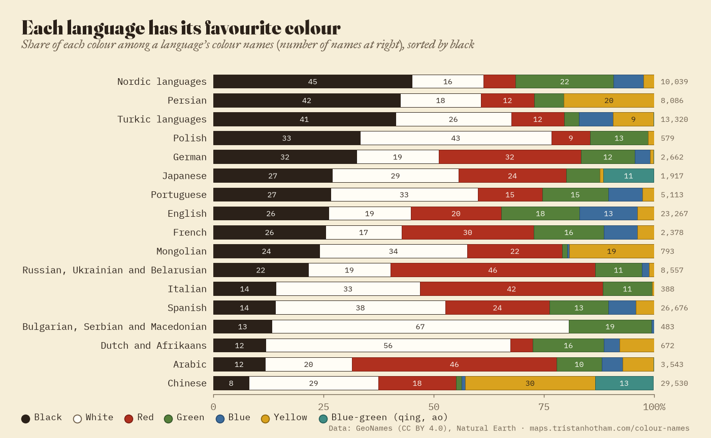
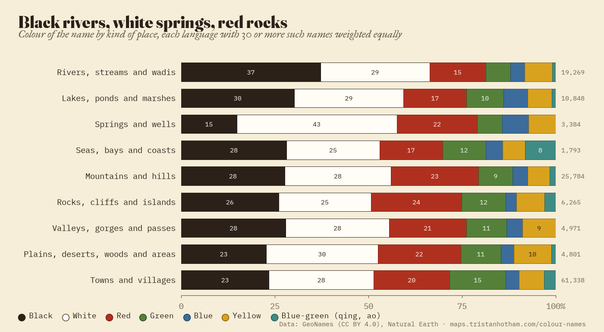
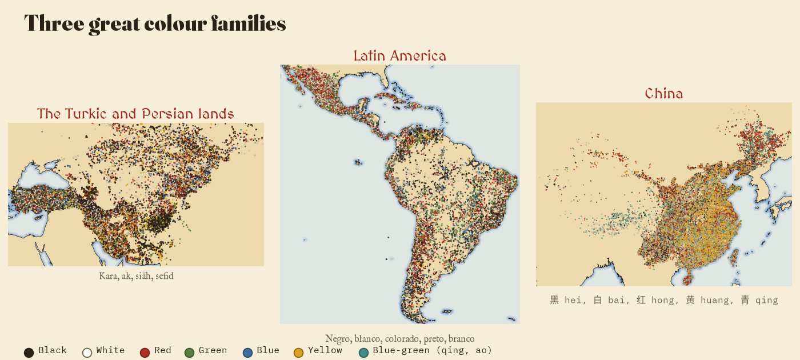
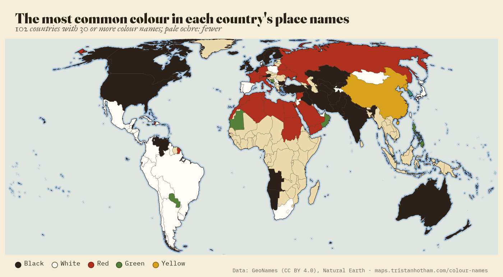

138,453 rivers, hills, springs and villages named black, white, red, green, blue or yellow, in 20 languages. Each dot is one name, tinted in its colour. Tap one to read it.
All over the world people have named places after their colour. A river runs dark with peat, so it is the Black Water, Kara Su or Río Negro. A spring bubbles out of chalk, so it is the White Well. A hill of iron-rich soil becomes Red Hill, Cerro Colorado or Krasnaya Gorka. I went through GeoNames, the largest open gazetteer, and picked out every name built on the word for black, white, red, green, blue or yellow in 20 languages, then mapped them.
The result is 138,453 names in 214 countries and territories: natural features (rivers, lakes, springs, mountains, rocks, valleys, plains and seas) and towns and villages. Buildings, farms, hotels and roads are left out, because they so often take a colour from a brand or an owner. The map above shows every one as a dot in its own colour. The dots are dense where the gazetteer is dense, so read it as a map of naming habits, not of how many places exist.
Of the 138,453 names, 26.5% are white, 23.2% black and 20.6% red; green has 10.5%, yellow 10.7% and blue only 5.5%. Chinese and Japanese names are counted from their characters, and Chinese villages are so numerous in GeoNames that they tilt the totals; without them black (27.3%) edges ahead of white (25.7%), with red behind (21.3%). The order is the one linguists have long found in the colour words of the world's languages: black and white first, then red, then green and yellow, and blue last. Blue is a late word in many languages, and a place rarely looks blue unless it is water.

Share of each colour among the colour names of each language. Chinese and Japanese blue-green (qing, ao) is shown apart.
The colour depends on what is being named. Weighting every language equally, so that one huge list cannot swamp the rest, 37.2% of river and stream names are black, the highest share of any kind of place, and rivers are blacker than the language's own average in 14 of 17 languages. Dark water is the oldest colour name there is: peat, deep pools, shade. Springs and wells are the whitest kind of place (42.7% white), for the chalk and limestone they rise from and the clear water. Red belongs to rock and bare ground: cliffs, crags and plains carry the most red names.
Mountains are less tidy than the old saying that mountains are white. White leads, at 28.4% against 27.6% black and 23.4% red, but mountains are whiter than their language's average in only 7 of 16 languages: snow peaks are white, but forested hills are black and bare ones red.

Colour of the name by kind of place, every language with at least 30 names of that kind weighted equally.
Each language has its favourite. In the Turkic world, from Anatolia to the Altai, kara (black) and ak (white) make up 67.7% of all colour names: Karasu (239 times), Aksu, Karakol, Kara Dağ, Ak Tepe. In Persian and Dari, siāh (black) alone is 42.4%, mostly mountains: Kūh-e Sīāh, the Black Mountain, appears 284 times. Nordic maps are covered in svart: 45.1% of their colour names, Svartberget and Svarttjønn on every fell, though Norway's white, kvit, is common too (Kvitfjellet, Kvitholmen).
The Spanish-speaking world is the whitest. Its hills are Cerro Colorado (1,084 times), Cerro Blanco (748) and Cerro Negro (531), and unlike most of the world its rivers are whiter than black: 36.4% of Spanish and Portuguese river names are white and 21.9% black, 428 Río Blanco against 309 Río Negro. In China, bai (white, 白) and huang (yellow, 黄) make up 58.8% of colour names, yellow for the loess and the Yellow River country, white for sand, stone and water.

Three colour families: the Turkic and Persian lands, Latin America and China.
In the 102 countries with at least 30 colour names, the most common colour is white in 35, black in 35, red in 21, green in 8, yellow in 2 and blue-green in 1 (South Korea); blue leads nowhere. Black leads across the English-speaking world, Scandinavia, Turkey, Central Asia, Iran and Afghanistan; white across Latin America, Mongolia, Serbia, North Macedonia, South Africa and Poland; red in the Arab world and in Russia. Switch on the country shading in the layers panel to see the map, or the black against white ratio.

Most common colour among each country's colour names (countries with at least 30).
Not all red is the colour of the ground. In Russia, Ukraine and Belarus 21.9% of red names are revolutionary: Krasnyy Oktyabr' (Red October), Krasnaya Zarya (Red Dawn), Krasnoarmeysk. In China 29.8% are, above all Hongqi (Red Flag) and Hongxing (Red Star) villages. Without them red would fall from 46.4% to 40.4% of East Slavic colour names. (Krasnyy also once meant beautiful, so Krasnaya Polyana may be a fair glade rather than a red one.)
And red earth is rarer than you might think. Of 3,735 names about earth, soil, sand or clay, from Tierra Colorada to 黄土, only 20.4% are red, about the same as names overall: white earth (Tierra Blanca, 406 times) and yellow earth are just as common. Tick "only names of earth" in the layers panel to see them.
Data. GeoNames (CC BY 4.0) lists about 13 million places. Two broad searches on colour words kept 252,615 candidate rows: whole words in English and the Romance languages, the start of words in German, Dutch, the Nordic languages, Polish and Russian, and the colour characters in Chinese and Japanese names; then a second, wider pass for English and Turkic compounds (Blackburn, Whitby, Aksu, Karakol), Norwegian kvit, Mongolian, Hindi and Urdu, and Korean.
The classifier. Most candidates are false friends: Rotterdam is not red, Belgrade's Bel is but Belov's is a surname, a Chinese Huang village is usually a family name, and Negro Creek in the United States is named for people, not a colour. So each language has its own rules: the colour word must be in a form that language uses (an adjective, or the first part of a compound whose second part is a landscape word, as in Schwarz-wald or Svart-berget), in a country where the language is spoken, and outside a stop-list of saints, surnames, plants and animals, brands and states. Chinese and Japanese are read only in their own characters. 75,991 candidates were turned down.
Checking. I read samples of up to 50 accepted names for every colour in every language, 4,370 names in all, and tuned the rules on what I found. After tuning, 4,327 of the 4,370 were right (99%); because the same samples guided the rules, the true precision is a little lower. For the second pass I read 50 names for each new rule: 299 of 300 were right. The review is in the data.
What it cannot say. GeoNames is fullest for the United States, Mexico, China, Norway and Iran, so counts follow the gazetteer, not the land. Some languages are only partly in: Korean names count only where the characters or a clear compound settle the meaning, and Hindi and Urdu only where the colour stands beside a landscape word (Kala Pani, Lal Tibba), which leaves mostly kala, black, so India and Pakistan look blacker than they are. Others are missing altogether (Hungarian, Finnish, Greek, Malay, Pashto, Afrikaans rooi and swart, and the languages of Africa). A colour word is not always about colour: Black can be a family name, krasnyy can mean beautiful, and qing and ao (青) cover both blue and green. Every caveat is in the paper.